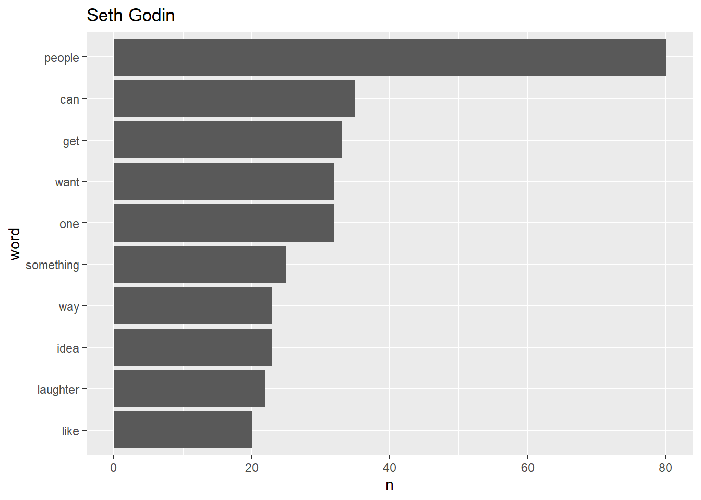

The project aims at comparing the TED talks delivered by two speakers Seth Godin and Robert Gupta in terms word frequencies and whether there is correlation between the sentiments of both speakers.
The talks involved in this project for analysis are as follows :
“How to get your ideas to spread” and “The tribes we lead” delivered by Seth Godin in the year 2003 and 2009 respectively.
“Music is medicine, music is sanity” and “On violin and cello,”Passacaglia” delivered by Robert Gupta in 2010 and 2011 respectively.
Seth Godin is an internationally recognized speaker, popular blogger, and global thought leader in innovative business ideas and marketing strategy on the other hand Robert Gupta is a violinist with the LA Philharmonic and maintains a passionate parallel interest in neurobiology and mental health issues.
In order to compare the words frequencies of both speakers ,frequently used word is counted by each speaker which will be further visualized in bar graphs.Also comparison of words used by both speakers is performed by selecting only the words whose sum of frequencies across the talks of two speakers is more than 10 times to determine the common words used which will be further plotted for visualization.
For sentiment analysis the bing library is used which simply associates a word with a negative or positive valence. At the end we count how many words are positive or negative and identify the percentage of both negative and positive sentiments to determine the proportion of sentiments for each speaker.
All the above operations are done after the tokenization and removal of stop words.
The two plots below display the frequency of the words used by the respective speakers in their talks.The top three words with highest frequencies “people”,“can” and “get” are used by Seth Godin while “Nathaniel”,“us” and “talking” are the three most used words by Robert Gupta.The word “music” and “violin” with highest frequencies interprets the music and violin being played in Rober’s talk.The word “laughter” in relatively high frequency in Seth’s text indicate audience’s joyful reaction to his talks whereas “applause” in Robert’s text indicate admiration of the music being played in the talks.

The words “music” and “violin” which signify music played; “laughter”and “applause” signify reaction and the words “like” and “can”,“just” have highest counts in the occurrence as observed in the above plot which do not hold significant meaning , such words are removed from further analysis creating custom stop words.
It can be clearly noticed in the plot that there is no similarity in the frequencies in both sets of texts by the speakers.Word that is far away in the y-axis is the word that is found more in one set of texts than another. For example, word “people” is found in the Seth’s texts but not the Robert’s texts.
Majority of words are at higher frequencies for Seth Godin which narrows down towards Robert Seth.In other words, the words used by Seth Godin are way high in frequency than Robert Seth.Also,Seth Godin uses words like “idea”,“spread” and “remarkable” and Robert Gupta uses word like “change” and “world”.
In order to analyse the sentiments across the talks delivered by the speakers,below table summarizes the percentage of the positive and negative sentiments based on the words associated with each sentiments.It can be interpreted from the table below that Seth Godin’s text has maximum percentage(approx 69%) of positive sentiments in his texts whereas Robin Gupta’s text has maximum percentage of negative(approx 56%) sentiments comparatively.The negative sentiments is minimum (approx 31%) for Seth Godin’s talks and Robert Gupta’s talks have average positive sentiments (appox 44%).We would further consider the maximum percentages of each sentiments for further investigation.
| speaker | sentiment | n | total | percent |
|---|---|---|---|---|
| Seth Godin | positive | 172 | 251 | 0.6852590 |
| Robert Gupta | negative | 29 | 52 | 0.5576923 |
| Robert Gupta | positive | 23 | 52 | 0.4423077 |
| Seth Godin | negative | 79 | 251 | 0.3147410 |
Thus, we can view to assess the top n words in the below plot that contribute for each positive and negative sentiments with high percentage for respective speaker depicted from above table.There are involvement of some powerful words like “leading”,“remarkable”,“charisma” and “success” in Seth’s texts signifying the positive sentiments whereas use of words like “paranoid”,“afraid” and “tragic” in Robert’s text does depict negative sentiments.
In conclusion , through word frequency comparison it can be derived that the talks delivered by both speaker Seth Godin and Robert Gupta does not have similar words which helps in depicting that the topics delivered by respective speakers belong to different genre.
The sentiment analysis derive that there is more positive influence and use strong words in the talks given by Seth Godin and that can be true as the topics describe about spreading innovative ideas and power of leading.On the other hand, Robert Gupta’s talks sight use of negative emotions which is justified because the talks are about music and treatment and he would have used negative adjectives to describe a moving story or patient.
It was challenging to depict the tone of some words example “like” was depicted as negative sentiment in the sentiment analysis whereas the speaker intended to use it in a different way then what was depicted.
Further, the analysis can be extended through n-gram analysis which will be helpful for exploratory analyses of the text.This will in turn provide context to the sentiment analysis.This project was limited to only positive and negative sentiments but further various sentiment analysis techniques like “nrc” and “afinn” can be used and compared to identify discrete emotions across the talks.